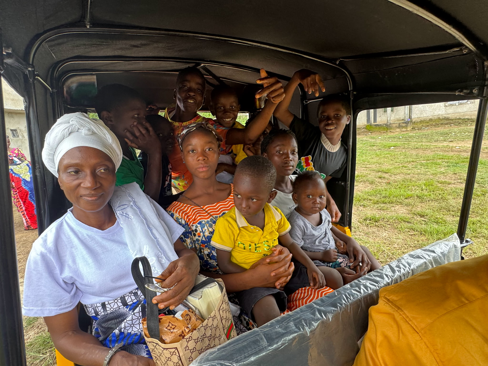
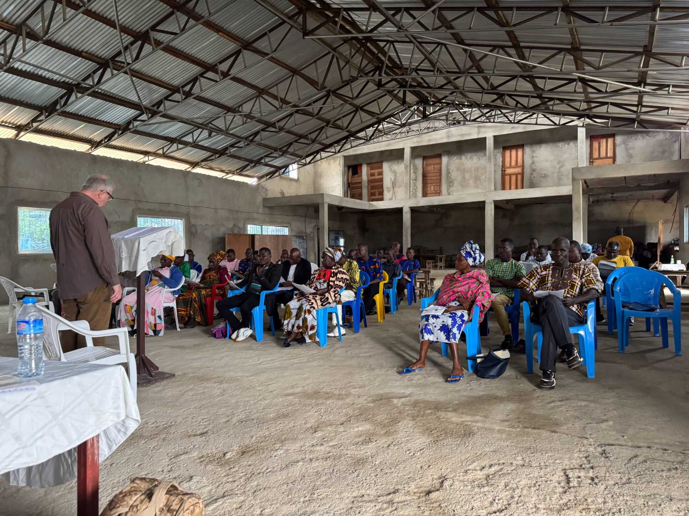
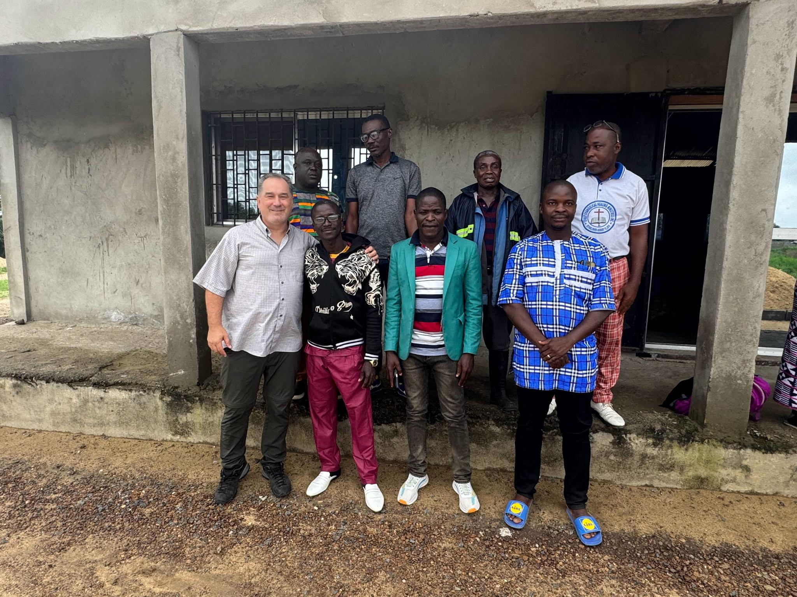

Travel to Liberia
International travel for the documentary mission.
Help us share what God is growing through faith, land, and opportunity.
We are going to listen, film, and help Liberian leaders share it.

Relationships come before cameras.

Worship, joy, work, and everyday life tell the real story.

Land can grow food, jobs, ministry, and a stronger future.
Tap a picture to see more.
Every gift removes a practical barrier.
International travel for the documentary mission.
Safe movement and a place to stay.
Filming, protecting, and editing the story.
Helping the finished film reach farther.
Tap a portrait to learn more.
Thank you to everyone who has donated, shared, prayed, or encouraged us.
Thank you for helping this mission begin.
Choose a level or give any amount.
Help with basic travel needs.
Give $25Support the 100-acre vision.
Give $60Support a day of filming and travel.
Give $100Help with international airfare.
Give $300Acre sponsorship is symbolic and does not provide land ownership. Gifts are processed through The Foundery Church.
Everything important, without making you search for it.
It is a documentary mission sharing the faith, people, and long-term vision growing across 100 acres in Liberia.
We are going to listen, build relationships, document the work, and help Liberian leaders share their story.
Gifts help with travel, transportation, lodging, documentary production, and sharing the finished story.
Yes. Anonymous giving options are available through the secure donation page.
Yes. Sharing the campaign, praying, encouraging the team, or connecting us with a community partner all help.
The campaign deadline is August 31.
Interested in supporting this mission through sponsorship, services, or resources? Connect with The Foundery Church.
Become a partner ↗